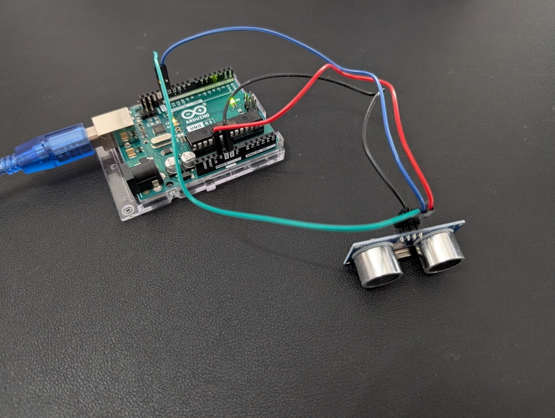
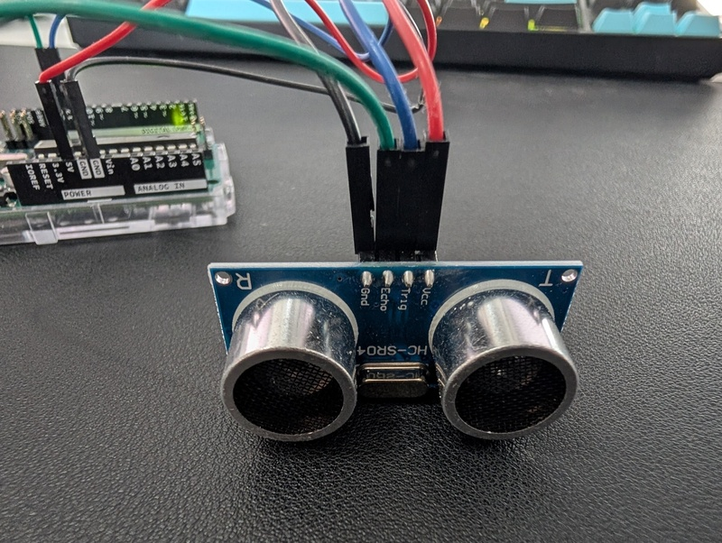
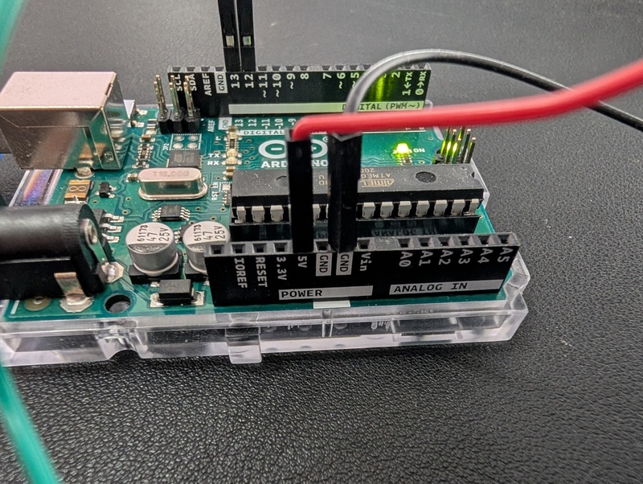
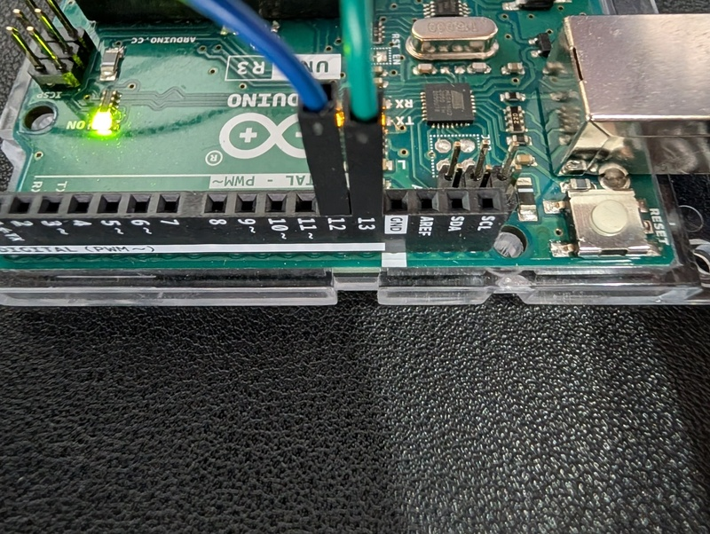

 
---- Neue Messung
Dauer 1-Strecke in Mikrosekunden: 141
Dauer 1-Strecke in Sekunden: 0.0001410
Schallgeschwindigkeit (m/s): 343.50
Distanz: 4.84 cm
---- Neue Messung
Dauer 1-Strecke in Mikrosekunden: 1005
Dauer 1-Strecke in Sekunden: 0.0010050
Schallgeschwindigkeit (m/s): 343.50
Distanz: 34.52 cm
---- Neue Messung
Dauer 1-Strecke in Mikrosekunden: 480
Dauer 1-Strecke in Sekunden: 0.0004800
Schallgeschwindigkeit (m/s): 343.50
Distanz: 16.49 cm
---- Neue Messung
Dauer 1-Strecke in Mikrosekunden: 856
Dauer 1-Strecke in Sekunden: 0.0008560
Schallgeschwindigkeit (m/s): 343.50
Distanz: 29.40 cm